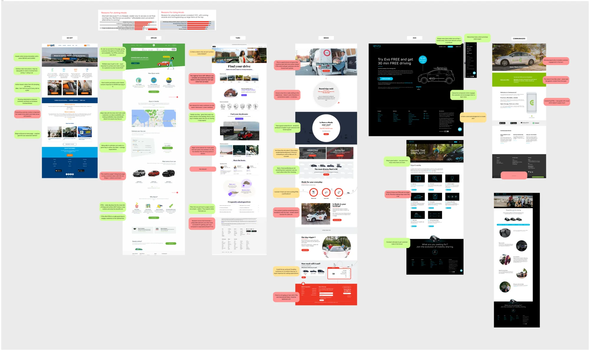
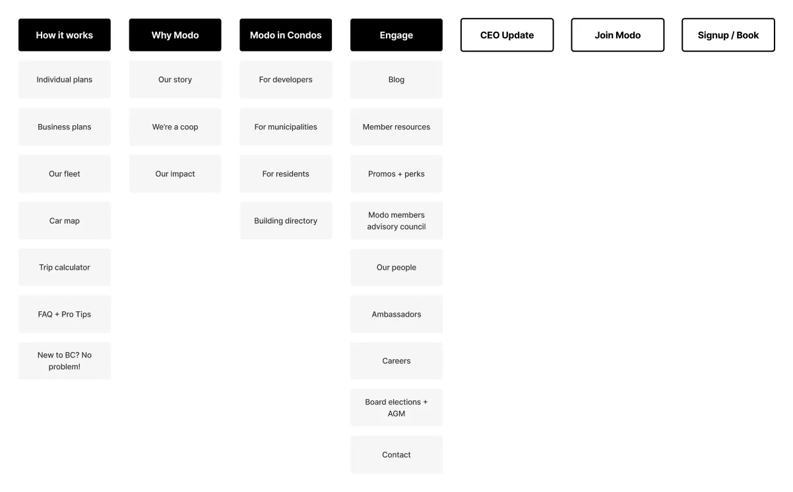
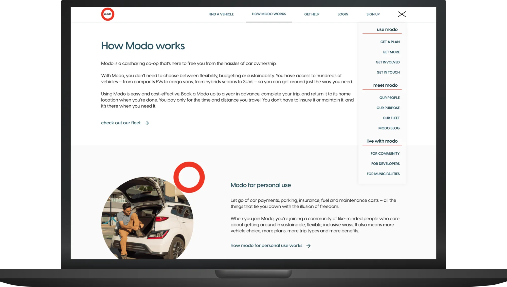
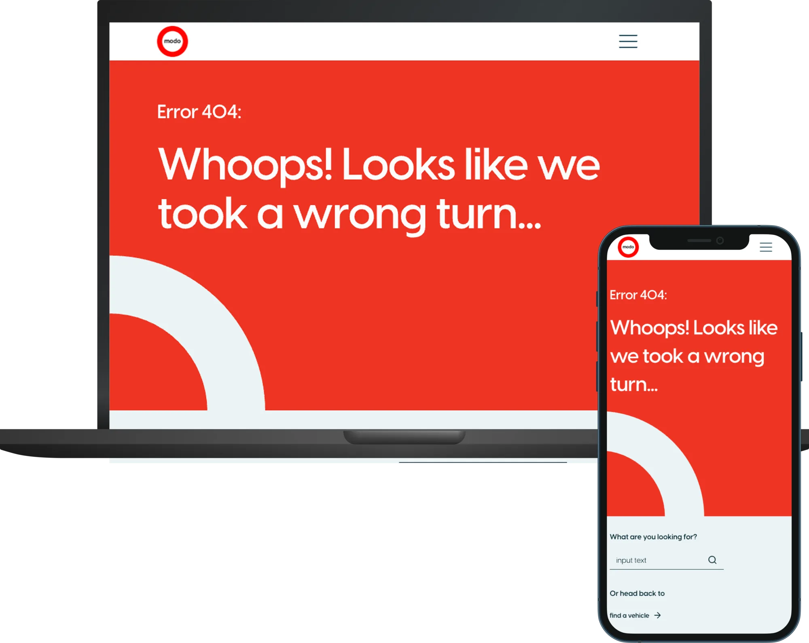

Modo: Marketing Site Redesign (B2C)
Vancouver's largest B-Corp car sharing coop needed a complete business-to-consumer website overhaul to simplify the content experience across marketing and member touch points, aligned with a broader brand and app refresh.

Ask
Modo approached All Purpose Creative to re-platform and redesign their website, as their marketing team wanted a more efficient and autonomous content management process.
With many stakeholders updating content and adjusting user flows independently, the site had evolved into what the team described as a 'franken-site'. This resulted in duplicated content, unclear navigation paths, tacked-on pages, and inconsistent branding. The CMS also made it difficult for the marketing team to manage and update the site independently.
The brief included realigning the website and mobile app, overhauling the navigation, user flow, and sitemap, and conducting a full content strategy review to remove unnecessary 'fluff'. Ultimately, the fragmented site experience was creating confusion for prospective Modo customers and contributing to an increase in unnecessary queries to the Help team.
Highlight/s
The All Purpose team rebuilt the site experience from the ground up. Starting with IA, led by me, we worked through each flow, page-by-page and considered what information was pertinent and what could be removed. A key through line was getting the user the information they need at each crucial step in the decision process, allowing them to have confidence when securing a vehicle. We cut the number of steps between "I need a car" and "I've booked one."
Contribution
- Worked with stakeholders to align the website experience by facilitating workshops and running stakeholder interviews
- Led UX and information architecture redesign of Modo's B2C marketing website, primarily focusing on restructuring core new user flows and overall site navigation
- Redesigned the map widget and fleet selection tools, supported user testing, and implemented improvements that streamlined the vehicle selection process
- Reworked the Q&A page to group similar questions together, allowing site visitors to get their questions answered quickly
Outcome
The redesigned marketing site delivered a streamlined digital experience for Modo and a more coherent and navigable website that aligns with the mobile app and reflects the coop's brand more consistently across various touchpoints.
Our engagement on the project saw an increase in content clarity, streamlined new member journey, and, most importantly, a significant decrease to customer calls to the Help Desk.
Project media
Here are some key artefacts from the project, with captions explaining each of them.



